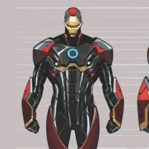
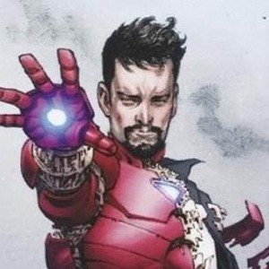

Principais Armaduras de Tony Stark

Endo-Sym (Modelo 50)
Armadura de metal líquido simbiótico criada na fase Superior. Conecta-se psiquicamente ao usuário.

Mark XLVI / Clássica
Armadura de nanotecnologia com repulsores integrados e suporte a inteligência artificial reservada.